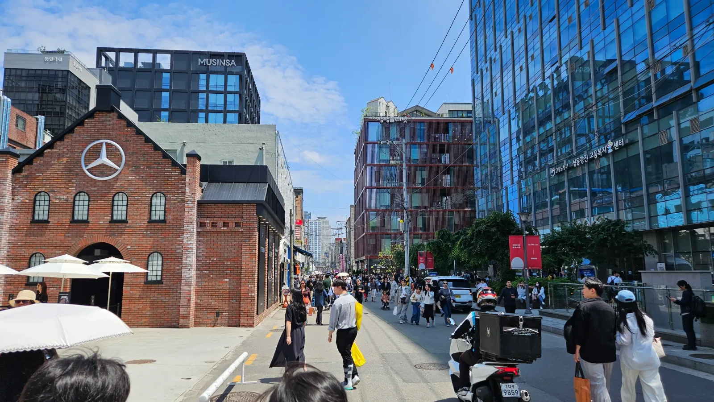
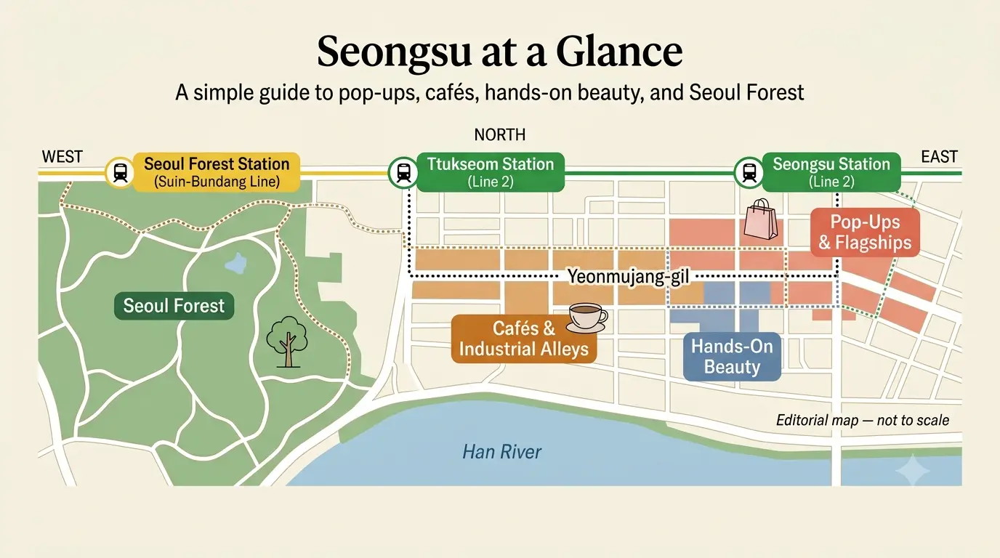
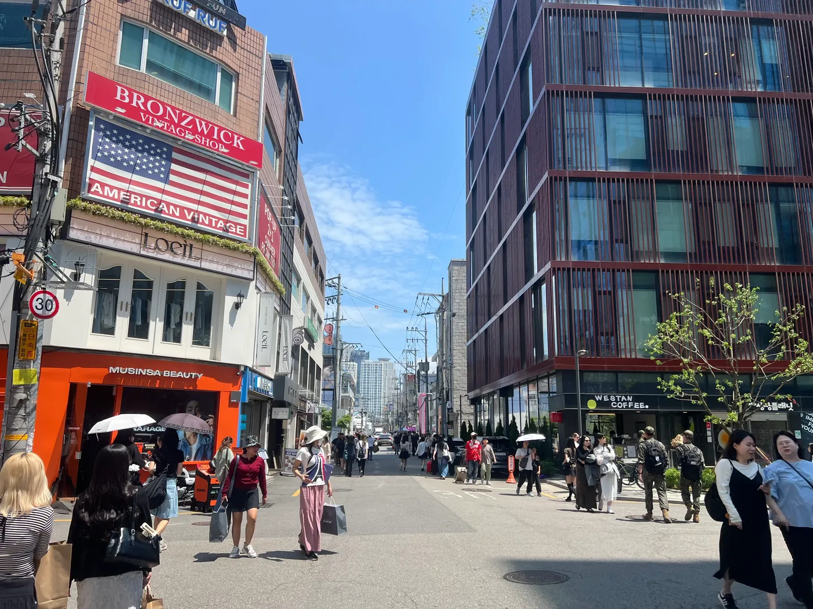
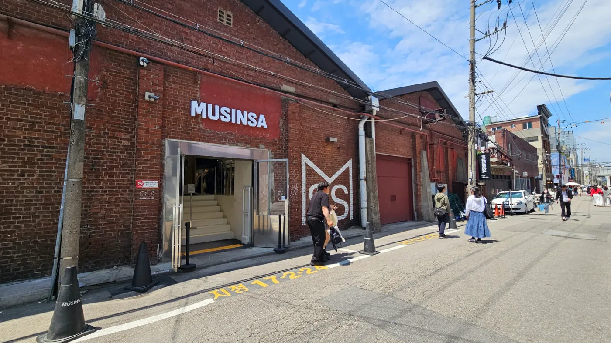
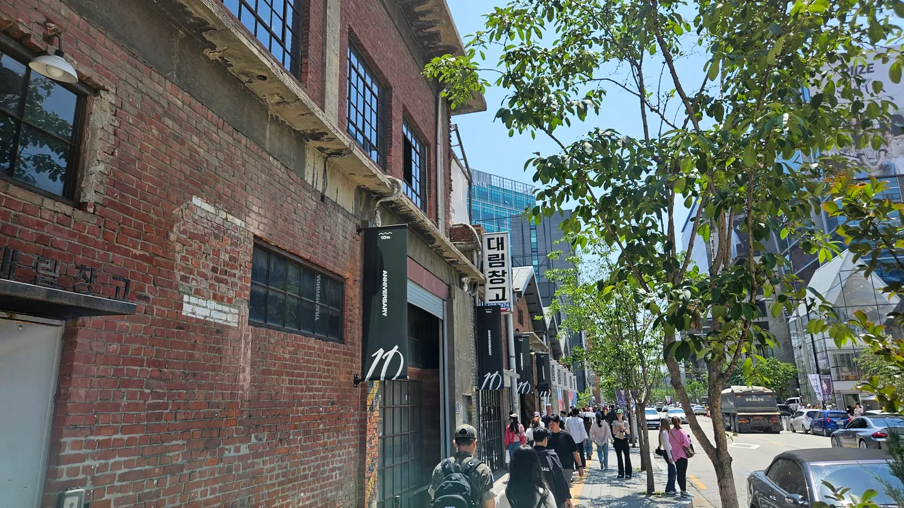
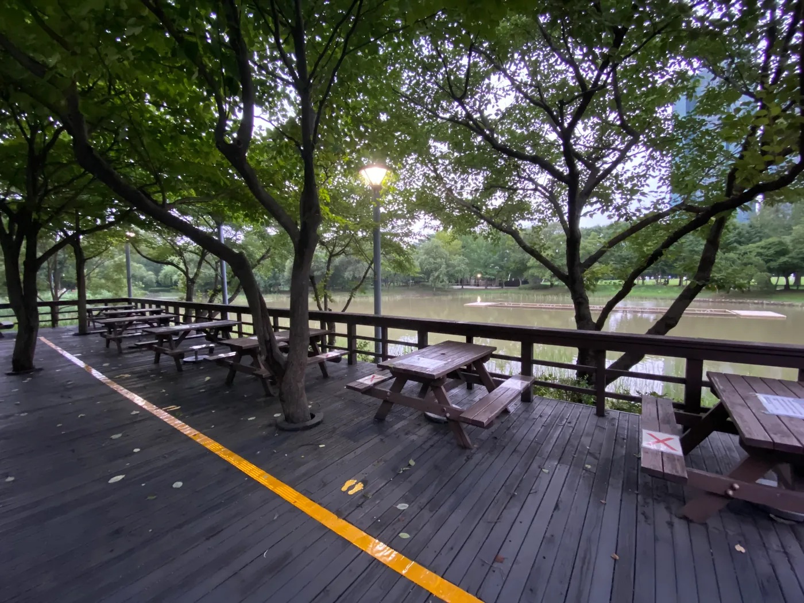

聖水観光ガイド 2026
聖水は、ソウルでも「計画の立て方を間違えやすい」エリアの1つです。

6か月前に保存したカフェはまだあるかもしれません。でも隣にあったポップアップは来週には終わっているかもしれません。朝は静かだった通りが午後には人で埋まり、20分の予定だった立ち寄りが、「その列の先に本当に興味があるか」を決めないまま並ぶと1時間になることもあります。
聖水を使いやすくするコツは、街を2つの層に分けて考えることです。
一日の軸は、しばらく残る場所で作る。ポップアップは変動する層として扱う。
まず、聖水を選んだ理由になった通り、常設店、美容施設、工業建築、ソウルの森を組みます。
そのあと、自分の旅行日に何が開催されているか確認します。
この順番なら、流行の速い街で期限切れのInstagram投稿を追いかけるだけの一日になりません。
聖水が本当に得意なこと
聖水は、いくつもの時代のソウルが同じ街に重なっているから面白い場所です。
古い聖水は、靴工房、工場建築、倉庫、工業街の中にまだ残っています。
新しい聖水は、その空間へファッション、ビューティー、カフェ、旗艦店、デザイン、短期ブランドイベントを入れています。
有名カフェ1軒より、この重なりのほうが聖水を理解するうえでは重要です。
今も聖水には旧靴工場や工業建築の痕跡と、現代のショップ、ギャラリー、ポップアップが共存しています。聖水手製靴通りも、地図に名前だけ残った歴史地区ではなく、今も製造が続くエリアです。
「歩きながら見つけること」が好きなら来る価値がある
聖水は、歩きながら新しいものを見つける旅行者に向いています。
固定で2〜3か所だけ決めておき、その日の午後に初めて知った場所へ入る余白を残せます。
出発前に主要スポットがほぼ決まっている宮殿観光とは違います。
聖水では、街そのものが変わり続けます。
新しい美容ブランドのローンチ、ファッションコラボ、小さな展示が、常設店2軒の間に突然入ることがあります。
予定を変えられること自体が魅力です。
ファッションとKビューティーが特に強い
聖水は、もう「倉庫を改装したカフェの街」だけではありません。
OLIVE YOUNG N Seongsuは現在、聖水駅近くで、買い物だけでなく肌・頭皮相談、肌色分析、入れ替わるポップアップコンテンツを運営しています。店舗は聖水駅4番出口から約100メートル、営業時間は現在10:00〜22:00です。
韓国ビューティーブランドが今どのように見せられているかまで興味がある人には、商品を買うだけ以上の意味があります。
ファッションも似ています。
大型常設スペース、韓国ブランド、海外ブランドの旗艦店、短期コラボが、比較的狭い範囲で同時に目に入ります。
観光地を順番に消化したい人には弱い
旅の理想が、
観光地A → 観光地B → 観光地C
なら、聖水は効率が悪く感じることがあります。
列で時間が変わる。ポップアップが予約制かもしれない。30分見る予定の店が5分で終わることもある。
逆に、実際に見たらまったく興味がなくなることもあります。
ここでは普通のことです。
解決策は、もっと細かいチェックリストを作ることではありません。
固定予定を減らして来ることです。
聖水だけで丸一日は必須ではない
初めてなら、半日でも十分強い体験になる旅行者が多いです。
工業街の雰囲気を見て、ショップやビューティースペースを数か所選び、カフェで1回休み、ソウルの森で締める。これだけで聖水を「耐久戦」にせず楽しめます。
ファッション、Kビューティー、デザイン、ポップアップが旅行の主要目的なら、丸一日も合理的です。
そうでなければ、聖水はソウル旅行の一部で十分です。
まず、実際に使える時間から考える
聖水を詰め込みすぎる最も簡単な方法は、「見るだけ」の時間を過小評価することです。
距離そのものは、地図ではそれほど長く見えません。
時間を使うのは立ち止まることです。
ポップアップ1つ、コスメ店1つ、旗艦店1つ、カフェ1つで、午後の大部分が静かに消えることがあります。
約3時間なら
聖水のどちら側を優先するか決めます。
トレンド中心なら、
聖水駅 → 練武場通り（ヨンムジャンギル） → 店またはポップアップを1〜2か所 → カフェまたは食事
公園中心なら、
ソウルの森 → 周辺の通り → 旗艦店またはカフェを1か所くらいです。
3時間で、本格的なポップアップ巡り、複数のビューティースペース、長いカフェ行列、ゆっくりしたソウルの森散歩まで全部はできません。
何かは外します。
半日なら
初めてなら最も組みやすい時間です。
急ぎすぎず、なぜ聖水が他の街と違うのか分かるくらいの余裕があります。
実用的な流れは、
聖水駅 → 練武場通り → 選んだショッピング／ポップアップ → しっかり休憩 → ソウルの森方向へです。
重要なのは「選んだ」です。
徒歩圏だからという理由で、10店舗のリストを作らないでください。
自分の興味に合う場所だけ決め、残りは実際に前を通ったときに興味を引くか競わせれば十分です。
ほぼ1日あるなら
街に余白を持たせられます。
美容やファッションをもっと見てもいい。カフェを1軒きちんと使ってもいい。工業街の背景を理解し、ソウルの森を「最後の写真スポット」ではなく本当の休憩にできます。
ポップアップにも余裕ができます。
一時イベントに列や時間指定があっても、旅程全体が崩れません。
ただし一日あっても、流行中の場所を全部回る必要はありません。
時間が増えたら、柔軟性を増やしてください。
チェックリストを増やす必要はありません。
週末は計算が変わる
平日なら20分で終わる場所でも、外に列ができれば大きく延びます。
特に短期ポップアップ、新しい旗艦店、SNSで話題のカフェで起きます。
本当に行きたい場所が1つあるなら、早めに置いてください。
任意の候補は後ろへ。
聖水で最ももったいない時間の使い方は、並んでいる人を見て初めて興味を持った場所に1時間並ぶことです。
聖水は店やポップアップを見るだけの街でもありません。買い物袋を増やすのではなく、作る、試す、理解する体験もあります。
ただし代わりに時間を使います。予約を入れた瞬間、その体験は一日の固定軸になります。すでにいっぱいのルートへ上乗せせず、旗艦店やポップアップ1ブロックと入れ替えてください。
予約体験は1つで十分なことが多い
スキンケア体験、パーソナルカラー、香水作りは、それぞれ行く理由があります。
3つ全部を入れる理由は通常ありません。
もともと聖水へ来た理由に最も合うものを1つ選び、その周りは街の柔軟さを残してください。

どこから始める？聖水駅かソウルの森か
聖水にも、唯一の正しい入口はありません。
最初にどの聖水を見たいかで決めます。
トレンドが優先なら聖水駅
ショッピング、ポップアップ、Kビューティー、工業街が目的の初回旅行者なら、聖水駅を基本にしやすいです。
練武場通りは現在3番出口から約533メートル、OLIVE YOUNG N Seongsuは4番出口から約100メートルです。
短期イベントと常設リテールが最も重なるエリアへ入りやすくなります。
ここから西・南方向へ少しずつ進めば、公園から始めて店へ何度も戻る動線になりにくいです。
ソウルの森が主目的ならソウルの森側から
ソウルの森が来た理由の1つなら、順番を逆にしてください。
体力と天気があるうちに公園を使います。
そのあと、商業エリアの密度が高い聖水へ移ります。
一日が静かな側から、だんだんにぎやかになる流れです。
前半を屋外、
後半を買い物とカフェにできます。
「聖水」という駅名だけで横断しない
聖水へ行くなら全員が聖水駅から出るべき、と思いがちです。
明洞へ行く全員が明洞駅から始める必要がないのと同じです。実際に組んだ一日を見てください。
最初に意味のある目的地がソウルの森側なら、
そこから始めます。
保存した場所の多くが練武場通りや聖水駅周辺なら、その側から。
地下鉄駅は入口です。
旅程ではありません。
一方向ルートのほうが往復より楽
初めてなら、
聖水駅 → 練武場通り → 選んだ旗艦店／ポップアップ → カフェまたは食事 → ソウルの森が分かりやすいです。
公園が優先なら逆方向でも構いません。
どちらも、
駅 → 店 → 公園 → 店へ戻る → 別のカフェ → また公園方向より使いやすいです。
聖水は歩ける街です。
何度も往復しても疲れない、
という意味ではありません。
練武場通りを理解してから歩く
練武場通りは、現在の聖水がなぜこの形になったのかを理解しやすい場所です。
単なる「流行店が並ぶ通り」ではありません。
旧靴工場や工業建築の痕跡が、カフェ、ギャラリー、服店、ブランドポップアップと同じ通りに共存しています。短期層は変わるため、訪問前にポップアップの開催日を確認してください。
これだけでも聖水の要約になります。

通りをチェックリストではなく「背骨」に使う
練武場通り沿いのすべてへ入る必要はありません。
本当に興味がある場所同士をつなぐ通りとして使ってください。
新しい店が気になれば入る。
知らないブランドで興味もないのに、列ができているから並ぶ必要はありません。
人混みは情報です。
命令ではありません。
ブランドだけでなく建物も見る
聖水の魅力の一部は、空間そのものです。
高い天井、むき出しのレンガ、昔の工場のスケール、倉庫のレイアウトは、観光客のために作ったテーマ装飾ではありません。
地区の工業史から来ています。
手製靴地区のように、その歴史が今も残る場所があり、新しい商業空間でも古い構造を意図的に残しています。
たとえばMusinsa Store Seongsu @ Daelim Changgoは、一般的な商業内装へ作り直すのではなく、長く使われてきた大林倉庫の構造を残しています。
同じブランドでも百貨店内とは違って感じる理由です。
建物も体験の一部です。
常設の街と短期コンテンツを混同しない
この区別をすると、計画がかなり楽になります。
練武場通りは残ります。
大林倉庫は街の常設的な構成要素です。
靴製造の歴史も、来週なくなるものではありません。
一方、別の建物内のブランド展示は、到着前に終了することがあります。
一日の軸は前者で作ってください。
後者で旅行日をカスタマイズします。
計画を変えていい街
聖水では、予定変更が正解になることがよくあります。
保存していた店より気になるポップアップが見つかるかもしれません。
カフェの列が、その価値より長いと感じるかもしれません。
ソウルの森への到着が遅くなり、「40分で十分」と決めるかもしれません。
旅程の失敗ではありません。
聖水という街の動きに合わせたということです。
ポップアップ：昔のリストではなく日付を見る
ポップアップは、聖水が「今の街」に見える理由の1つです。
同時に、聖水の旅程で最も間違えやすい部分です。
先月の動画で紹介された店がもう終わっていることがあります。保存したコラボが到着2日前に終了することもあります。まだ開催中でも、予約、ウェイティング、時間指定入場が必要かもしれません。
使うべき質問は、
「聖水で一番おすすめのポップアップは？」
ではなく、
「自分の旅行日に実際に開いていて、時間を使いたいほど興味がある？」です。
ルートを作る前に開催日を確認
一日の常設部分は、長く残る場所で作ります。
そのあと、
旅行直前に現在のポップアップを確認します。
- 1件ごとに、
- 開始日・終了日
- 毎日の営業時間
- 予約・ウェイティング条件
- 無料入場か主に買い物、展示、体験型のどれかを確認してください。
きれいな保存投稿だけでは分かりません。
ポップアップ自体が「アクティビティ」の場合もある
聖水のポップアップには、買い物目的でなくても時間を使う意味があるものがあります。イベントによっては、商品テスト、ゲーム、フォトゾーン、サンプル、DIY、限定グッズなどを組み合わせています。
その場合、ポップアップ自体が一日のアクティビティになります。10分見るだけの店と、時間指定で複数の体験ゾーンがあるイベントを同じ時間で考えないでください。予約制・複数ゾーンなら、正式な時間ブロックを取り、別のショッピングを1つ減らします。
ブランドに興味がないのに、写真壁とグッズが中心なら、そのまま通り過ぎても構いません。インタラクティブだから自動的に価値があるわけではありません。
列より興味が先
長い列はイベントを重要に見せます。
並ぶ理由にはなりません。
もともと興味があるブランド、アーティスト、キャラクター、商品なら、待つ価値があるかもしれません。
80人の列を見て初めて興味を持ったなら、通り過ぎてください。
列は人気だと教えてくれます。
ソウルの1時間を使う価値までは教えてくれません。
良いポップアップは1つで十分なことが多い
同時に多くの短期イベントが開かれることがあります。
全部集めようとすると、街歩きではなく予約表になります。
多くの旅行者なら、
本当に興味のあるポップアップ1つ＋常設店＋カフェまたは食事＋ソウルの森
のほうが、「開催しているから」という理由だけで5件回るより強い一日です。
一時イベントは通常ルートの一部を置き換えるものです。
その上に追加するものではありません。
代替案を1つ持つ
短期イベントには、予定変更のリスクもあります。
早めに閉まる、限定品が売り切れる、混雑で待つ価値がなくなることがあります。
そのとき何をするかだけ決めておいてください。
聖水では簡単です。
次の常設店へ歩く、昼食にする、ソウルの森へ移る、練武場通りをそのまま進む。
ポップアップ1件の失敗で失うのは10分くらいで十分です。
午後全部を失う必要はありません。
聖水ショッピング：予定に入れる価値がある常設旗艦店
聖水での買い物は、「長く行く理由が残る場所」と「今週だけ話題の場所」を分けると使いやすくなります。
目的は、ショッピングリストを長くすることではありません。
一日にいくつか信頼できる軸を作ることです。
HAUS NOWHEREは「買い物空間」自体を体験する場所
HAUS NOWHERE SEOULは、アイウェアを買う人だけに意味がある場所ではありません。
Gentle Monsterの現在の旗艦店は、433 Ttukseom-roで毎日11:00〜21:00営業しています。
重要なのは、リテール、デザイン、インスタレーションを1つの体験として作っていることです。
こうした空間デザインに興味があるなら行く意味があります。
興味がないなら、写真映えする建物だからという理由だけで行く必要はありません。
聖水ではこの区別が重要です。
見た目が印象的な旗艦店でも、あなたの旅には不要かもしれません。
Musinsaは別の聖水を見せる
Musinsa Store Seongsu @ Daelim Changgoは、古くからある大林倉庫の構造を隠さず、店舗自体へ取り込んでいます。
残された倉庫構造、高い天井、大きな売場が体験の一部です。
韓国ファッションに興味がある人と
、聖水が古い工業建築を新
しい商業空間へどう変えているか興味がある人の両方に意味があります。
どちらにも興味がなければ、単なる1軒の店です。
両方に興味があるなら、1か所で2つの関心を満たせます。

常設層も止まってはいない
聖水には大型の常設リテールも増え続けています。
たとえばMusinsa Mega Store Seongsuは、買い物と空間体験を組み合わせる、より大きなファッション・ビューティースペースとしてオープンしました。
だから古い「聖水で絶対行く5店」の記事は早く古くなります。
常設層はポップアップよりゆっくり変わります。
変わらないわけではありません。
旗艦店は興味別に選ぶ
使いやすい分け方は、
ファッション
→ 大型ファッションスペースを1つ
デザイン／空間体験
→ 建築や展示に興味がある旗艦店を1つ
ビューティー
→ すべての美容店を足さず、Kビューティーの項目から選ぶ
特定ブランドのファン
→ そのブランドへ直接
です。理由の違う旗艦店を1〜2か所選べば、多くの旅行者には十分です。
聖水では、大きな場所ごとに「ルートへ入る理由」が違うほうが、一日が良くなります。
香水作りは、ゆっくりした創作時間が欲しいとき
香りとデザインの文化がある聖水には、香水ワークショップも自然に合います。
現在の体験には、約1〜1.5時間で自分の香りを作れ、多言語のガイド動画に対応するものもあります。
もう1軒旗艦店を足すより、聖水で自分が作ったものを持ち帰りたい人には向いています。
聖水のKビューティー：Olive Young NかAMOREか
Kビューティーは、海外旅行者が聖水を検索する大きな理由の1つになっています。
役に立つ比較は「どちらの店が上か」ではありません。
OLIVE YOUNG N SeongsuとAMORE Seongsuは、解決する目的が違います。
その違いで時間の使い方を決めてください。
OLIVE YOUNG Nは広く知りたい人向け
OLIVE YOUNG N Seongsuは聖水駅4番出口から約100メートル、現在10:00〜22:00営業しています。
通常の商品棚だけでなく、肌・頭皮相談、肌色分析、税金還付サポート、毎月入れ替わるコンテンツやポップアップがあります。
次のような人には、最初の1軒として強いです。
- 複数の韓国ブランドを知りたい
- 商品カテゴリーを比較したい
- 現在の美容トレンドを見たい
- 買い物と診断・ブランド体験を組み合わせたい
逆に、欲しい商品が明確で、別の場所でも買えるなら、聖水の時間をさらに大型店の中で使う必要は減ります。
一部サービスは事前確認が必要
OLIVE YOUNG Nは、サービスによって当日受付と事前予約を使い分けています。
肌分析などの相談が訪問理由として重要なら、到着前に現在の予約方法を確認してください。
いつ行っても、すぐその場で受けられるとは考えないでください。
買い物は柔軟にできます。
特定の相談サービスはそうとは限りません。
パーソナルカラーは、そのあと買うものが変わるなら有効
まだ美容・ファッションの買い物が残っているなら、パーソナルカラー診断を予約する価値があります。
聖水駅周辺には、英語対応を含む旅行者向けの選択肢があります。診断結果によって、その後に探す色、服、メイク用品が実際に変わるほど使う予定があるときに最も価値が高くなります。
すでに自分のパレットを知っている、または診断結果を買い物へ使わないなら、飛ばしやすい体験です。
AMORE Seongsuはゆっくり、1社を深く見る
AMORE Seongsuは違う美容体験です。
1,000点以上のAmorepacific商品を試せるBeauty Library、クレンジングルーム、ガーデンラウンジなどがあります。
現在は火曜〜日曜10:30〜20:30、月曜休館です。
大きなマルチブランド市場を速く見るより、1社の美容エコシステムを時間をかけて試したい人に合います。
違いは分かりやすいです。
OLIVE YOUNG N → 幅広さ、ブランド、トレンド、発見
AMORE Seongsu → ゆっくり試す、1つの美容エコシステム、体験
自動的に両方へ行く必要はありません。
Kビューティーが一日の一部なら、どちらか1つ
Kビューティーが大きな目的なら両方でも構いません。
聖水でやりたい6つのうちの1つなら選んでください。
種類の多さが重要ならOLIVE YOUNG N。
ゆっくり商品を試すことに興味があるならAMORE。
そのあとにファッション、工業街、食事、ソウルの森の時間を残します。
有名な美容空間を全部回ることが目的ではありません。
もう1軒コスメ店へ行くより、スキンケア作りが合う人もいる
Kビューティーが聖水を選んだ理由の1つで、棚の商品を比較するだけではなく実際に手を動かしたいなら、スキンケア体験が合います。
現在の聖水には、肌状態を確認し、合うクレンザーラインを選び、自分でスキンケア商品を作ったりパッケージしたりする体験があります。美容時間の一部が、もう1回の店巡りではなくアクティビティになります。
同じ1時間を大型美容店でもう1回使うより、自分で1商品作りたい人に向いています。
聖水のカフェ：5軒ではなく1軒選ぶ
聖水には、コーヒーだけで一日が終わるほど有名カフェがあります。
カフェが来た理由なら、それでも構いません。
そうでなければ、カフェをチェックリスト化するより、良い休憩を1回入れるほうが役に立ちます。
判断するのは、カフェが一日の中で何の役割を持つかです。
理由を決めてカフェを選ぶ
いくつか正しい理由があります。
建物が目的
大林倉庫のように、改装された工業空間そのものが現代の聖水を理解する理由になる場所があります。食べ物が目的
特定のベーカリーやデザートが本当に旅行の興味なら、それを理由にしてください。
休憩が必要
実はこれが一番良
い理由になることもあります。
店を2〜3軒とポップアップ1件見たあと、さらに話題の場所を足すより、1時間座るほうが残りの一日を良くすることがあります。
カフェ自体が目的のときだけ並ぶ
そのカフェへ行くこと自体が目的なら待っても構いません。
コーヒーと席だけ必要なら、もう1ブロック歩いてください。
聖水にコーヒー不足はありません。
カフェ巡りにも隠れたコストがある
5軒のカフェは、
ドリンク5杯だけではありません。
場所を探す、並ぶ、注文する、座る、また移動する、次に行く価値があるか毎回判断する。
予定表では空白に見えた数時間が消えます。
カフェがソウル旅行の主要目的なら、カフェ中心で組んでください。
そうでなければ、
意図して選んだカフェ1軒 → 街歩きを続ける
を基本にします。
ソウルの森の前、または買い物ピーク後の休憩にする
ランキングより、休むタイミングのほうが重要です。
使いやすい流れは、
聖水駅 → 練武場通り → 買い物／ポップアップ → カフェ → ソウルの森方向へまたは、
ソウルの森
→ 散歩 → カフェ → 聖水の密集した商業エリアへ
です。カフェが、街の2つの顔をつなぐ切り替えになります。
TikTokで見たラテ1杯のために聖水を横断するより実用的です。
古い工場と靴工房が今も重要な理由
ポップアップ以前の聖水を少し知ると、現在の街が分かりやすくなります。
もともとファッション地区だったわけではありません。
長い間、聖水は製造業、工房、特に靴生産と結びついていました。
この歴史は、流行カフェのリストより今の聖水をよく説明します。
工業建築は装飾ではない
広い床面積、高い天井、レンガ壁、古い倉庫構造が、後にカフェ、ショップ、展示、ブランドインスタレーションへ再利用できる空間を作りました。
だから聖水の新しい空間は、
普通のショッピングモールとは違って感じられます。
建物が見えたまま使われることがあります。
ファッション店なのに倉庫らしさが残る。カフェでも元工場のスケールが分かる。
工業の過去が、今のデザイン言語にそのまま入っています。

靴産業は今もある
手製靴通りを、「昔は工房があった博物館地区」のように扱わないでください。
現在もデザイン、開発、製造、販売が続いています。
オーダー靴を買わなくても、このエリアを見る意味があります。
なぜ今も聖水のリテールで靴の存在感が強いのか、背景が分かります。
新しい店にも、そのつながりが見えます。
昔の聖水と今の聖水は、完全に別の物語ではありません。
新しいほうが古いほうを繰り返し借りています。
歴史ツアーを2時間する必要はない
ここで工業遺産を2時間勉強しろという話ではありません。
実用的な価値はもっと簡単です。
練武場通りを歩くとき、改装倉庫へ入るとき、中のブランドだけでなく建物も見てください。
少し背景を知るだけで、「流行の店が多い街」から、
「製造業の街が今まさに別の使
われ
方へ変わっている場所」に見え方が変わります。
そのほうが、ここへ来る理由として面白いです。
古い層が、流行チェックリスト化を止めてくれる
ポップアップは消えます。
ブランドは変わります。
バズったカフェも注目を失います。
聖水の工業構造は、それよりずっとゆっくり変わります。
だからこの層は、エバーグリーンのガイドに残す価値があります。
今週の一時イベントに興味がなくても、街を理解できる理由が残ります。
ソウルの森を「リセット」に使う
ソウルの森を、買い物のあとに追加する観光スポット1件にしないでください。
聖水の一日のテンポを完全に変える場所として使うと価値が出ます。
狭い通り、店、列の中で数時間過ごしたあとだからこそ、広さが効きます。
本当に変化が必要なときに使う
使いやすい流れは、
練武場通り → 買い物／ポップアップ → カフェまたは食事 → ソウルの森
です。
公園に着くころには、次の地図ピンを増やすことが価値ではありません。
空間そのものが価値です。店へ入らず歩けます。
何かを注文しなくても座れます。
そのあと、聖水をさらに続ける必要があるか考えられます。
商業エリアが最も忙しい時間のあとに合う理由です。

公園全部を歩く必要はない
ソウルの森は、「短時間で全部見た」とチェックするには広すぎます。
30〜40分しかないなら、1つのエリアだけ使い、環境が変わることを楽しんでください。
天気が良く、公園が旅の優先事項なら長くいても構いません。
半日の聖水旅行が、公園の全ルートを歩いたから良くなるわけではありません。
その日に必要なだけ使ってください。
この部分は天気で決める
ソウルの森は、快適な天気で価値が大きく上がります。
春や秋の晴れた午後なら、長い休憩にしてもいいです。
大雨、厳しい暑さ、強い寒さの中で長時間歩いても、得るものはあまり増えません。
その場合は短縮または削除し、食事、買い物、屋内スポットへ時間を戻してください。
公園が役立つのは快適だからです。
元の旅程に書いてあったからではありません。
2026年は公園を再確認する理由が1つ増える
2026 Seoul International Garden Showは10月27日まで開催予定で、ソウルの森が主要会場の一部です。
これは通常ルートではなくCurrent Layerに属します。
訪問日が重なるなら、公園へ少し多く時間を使う理由になるかもしれません。
イベント終了後も、ソウルの森の基本的な役割は変わりません。
一時イベントが訪問内容を変えるのであって、
公園の価値そのものを作るわけではありません。
聖水で何を食べる？デザートだけで終わらせない
聖水の一日は、気づくと、
コーヒー → パン → ポップアップ → またコーヒー → デザート
になりがちです。カフェが一日の目的なら問題ありません。
ただ、最終的にちゃんとした韓国料理を食べたいなら、全員が同時に空腹になる前に決めてください。
ベーカリーから始まるおすすめ記事では見えにくい、昔からの食文化も聖水にはあります。
カムジャタンは、きちんと食事したいときに使いやすい
Somunnan Seongsu Gamjatangは、流行スポットを1つ増やすのではなく「ちゃんと食べたい」という問題を解決する例です。
24時間営業で、1人客向けの指定席もあります。
そのため、
- 1人でちゃんとした食事をしたい旅行者
- 買い物後の遅い昼食
- その後の予定を柔軟にしたい日の夕食
- カフェ系の食事に飽きた人に使いやすいです。
有名だから必須になるわけではありません。
自分にとって食事の価値より列が長いなら、聖水には他にも店があります。
カルビ横丁は、別の聖水につながっている
聖水洞カルビ横丁は1970年代、この地域の競馬場利用客を背景に発展し、今も豚カルビ店が残っています。
今日のポップアップ経済ではなく、古い聖水の街へ食の話がつながる点が重要です。
焼肉と座って食べる食事がグループに合うなら選べます。
1人、時間が短い、あとで重い食事を予定している場合には使いにくくなります。
必要なら昼食が午後を決めていい
食事を店と店の間の小さな隙間に押し込む必要はありません。
空腹で到着したら先に食べてください。
無理に買い物の順番を守るより、落ち着いて食べたほうがその後3時間の徒歩を有効に使えます。
時間指定のポップアップや相談を予約しているなら、その前後で食事し、固定予約の途中に急いだ食事を入れないでください。
固定予定が、柔軟な予定を決めます。
カフェの食べ物と本当の食事は役割が違う
休憩だけならパン1つで十分なことがあります。
デザートカフェ自体が興味なら、目的地になります。
スープ、焼肉、別のしっかりした料理は空腹を解決します。
同じ役割を競わせないでください。
初めてなら、
軽い朝食または別の場所で昼食 → 聖水で買い物 → カフェ休憩 → あとでちゃんと食事または、
聖水で昼食 → 買い物／ポップアップ → ソウルの森 → 帰る前にカフェ
のように考えられます。
唯一の順番を守るのが目的ではありません。
7:00 PMに「デザートを4回食べたのに、全員まだ夕食が必要」と気づくのを避けることです。
実際に使いやすい聖水ルート
聖水に完璧なルート1つは必要ありません。
往復を減らす最低限の構造と、
短期イベントで予定を変えられる柔軟さが必要です。
ルート1 — 約3時間：目的を絞る
聖水を、より大きなソウル観光日の一部にするときに使います。
聖水駅 → 練武場通り → 買い物優先1つ → カフェまたは食事1回買い物優先は、
ファッション旗艦店1つ
- OLIVE YOUNG N
- AMORE
- Seongsu
- 現在開催中のポップアップ1つ
のどれかです。
1つ選んでください。聖水では、見て回り、待つだけで3時間はすぐ消えます。
5店舗、カフェ2軒、ソウルの森まで入れるルートではありません。
ルート2 — 半日：初めての基本形
初回なら、多くの旅行者にこれが最も使いやすいです。
時間の目安 — 約6時間
-
11:00 AM — 聖水駅3番出口から開始
商業エリアが一日の活動を本格的に始めるころにスタートします。
最初から公園へ横断せず、練武場通りと店が密集する側を先に使います。
-
11:10 AM–12:30 PM — 練武場通り＋本当に意味のある1〜2か所
最初に練武場通りを歩きます。
ファッション、Kビューティー、デザイン、現在のポップアップなど、すでに自分に興味があるものから1〜2か所を選びます。
人が並んでいるからという理由だけで列へ入らないでください。
列は情報です。命令ではありません。
-
12:30–1:30 PM — ちゃんと昼食
一日がコーヒー、パン、買い物袋だけになる前に止まります。
ルート近くでちゃんと食事し、この1時間を休憩に使ってください。
-
1:30–2:30 PM — 買い物優先を1つ
この1時間は主要関心1つへ。
ビューティー、ファッション、デザイン旗艦店、特定ブランドのどれでも1時間使えます。
聖水の大型店を全部集めようとしないでください。
-
2:30–3:20 PM — カフェ1軒
建物、食べ物、または座る必要があるという理由で1軒選びます。
カフェが来た理由なら長くいて構いません。
そうでなければ、休憩1回で十分です。
-
3:20–3:50 PM — ソウルの森方向へ移動
一方向へ進み続けます。
保存した店が残りの午後より本当に重要でない限り、聖水駅側へ戻らないでください。
-
3:50–5:15 PM — ソウルの森で終了
数時間の店、通り、列のあと、ペースを変えます。
公園全部を歩く必要はありません。
歩く、座る、開けた空間を使い、そのあと聖水を終えるか考えます。
-
5:15 PM以降 — 夕食に残るか、次へ移動
まだ聖水を使いたいなら夕食。
別の街で夜を過ごすなら、ソウルの森側から移動します。
予想より早く終わったからという理由で、旗艦店をもう1つ足さないでください。
聖水駅 → 練武場通り → 選んだ買い物／ポップアップ → カフェまたはしっかりした食事 → ソウルの森方向へ
商業密度の高い場所から始まり、開けた空間で終わるため、
自然に一日のテンポが変わります。
どうしても行きたいポップアップがあれば、買い物1件と入れ替えます。
一時イベントに興味がなくても、このルートはそのまま使えます。
そこが重要です。
ルート3 — 公園から始める
天気が良く、最新リテールよりソウルの森のほうが重要な日に使います。
時間の目安 — 約6時間
-
9:30 AM — ソウルの森駅から開始
聖水の商業側がまだ本格稼働する前に公園を使います。
「買い物後に入れた観光地」ではなく、公園が来た理由の1つである場合に向いています。
-
9:40–11:00 AM — ソウルの森
約80分使います。
公園全部を歩く必要はありません。
開けた空間を楽しみ、座りたければ座り、商業エリアが混む前の静かな朝を使います。
-
11:00–11:30 AM — 聖水へゆっくり移動
店や旗艦店が開く時間に合わせて、商業側へ歩きます。
街が変わっていく過程を見て、単なる移動時間にしないでください。
-
11:30 AM–12:30 PM —
昼食またはカフェ1回
空腹で決めます。
食事が必要なら今。朝食が遅く休憩だけなら、ここを唯一のカフェに。
自動的に両方入れないでください。
-
12:30–1:30 PM — 常設の軸を1つ
今週のトレンドが終わっても行く理由が残る場所を1つ選びます。
ファッション旗艦店、デザイン空間、Kビューティー、もともと見たかった特定ブランドなどです。
1つです。
-
1:30–3:10 PM — 練武場通り＋意味があれば現在のポップアップ1つ
一日の最もにぎやかな時間をメイン商業街に使います。
ポップアップは確認しますが、本当に興味のあるもの1件だけに時間を使います。
何もなければ常設店と街そのものへ時間を残します。
-
3:10–3:30 PM — 聖水駅方向で終了
ここまでで、公園、食事またはカフェ、常設の軸1つ、聖水のメインストリートを使っています。
初回として十分です。
聖水駅から移動するか、ここで追加1件が本当に時間を使う価値があるか決めます。
ソウルの森 → 周辺の通り → カフェまたは昼食 → 常設旗艦店／Kビューティー → 練武場通り → 聖水駅
時間が進むほどにぎやかになるルートです。
屋外を先にしたい日や、その後の予定が聖水駅側にある場合にも使いやすいです。
前を通ったからという理由で、すべての商業スポットを消化する必要はありません。
ルート4 — ファッション＋Kビューティー中心
本当に買い物が目的なら、
聖水駅 → OLIVE YOUNG NまたはAMORE → 大型ファッション／デザイン旗艦店1つ → 関連する現在のポップアップ → 食事 → 任意でソウルの森
と組みます。時間指定の美容・香水体験を予約したら、旗艦店またはポップアップ1件と入れ替え、上に積まないでください。
最初に、求める美容体験でOLIVE YOUNG NかAMOREを選びます。
ファッション空間も、自分の興味で1つ。
そのあと、残り時間を使う価値がある短期ポップアップか考えます。
有名カフェを全部足さなくても、ほぼ一日使えます。
ルート5 — ポップアップなしで回る
訪問日に合う短期イベントがないと「聖水へ行く意味がない」と考える旅行者がいるため、
このルートは重要です。
そんなことはありません。
聖水駅 → 手製靴／工業街の背景 → 練武場通り → 常設旗艦店 → 食事 → ソウルの森
なら、3週間だけのコラボに1つも依存しません。
古くなりにくい聖水ルートでもあります。
Korea Insideの基本形
迷ったら、聖水駅 → 練武場通り →
買い物優先1つ → 本当に興味がある場合だけ現在のポップアップ1つ → カフェまたはしっかりした食事 → ソウルの森を使ってください。
そこで一度終わりです。
まだ体力があり、近くに本当に意味のある場所があれば続けます。
すでに5時間使ったなら、聖水は十分役割を果たしています。
街を「完了」することが目的ではありません。
なぜ聖水が今ソウルで最も話題になるエリアの1つなのか、少し理解して帰れれば十分です。
聖水が合う人、あまり時間を使わなくてもいい人
聖水は流行しているため、「行かなければいけない場所」に見えやすいです。
そうではありません。
ファッション、Kビューティー、カフェ、デザイン、ポップアップ、ソウルの森のどれかが、もともと自分の旅行スタイルに合っているときに強い街です。
初めてのソウル旅行者
相性は良いですが、自動的に丸一日ではありません。
ソウル滞在に余裕があれば、宮殿や伝統街とは違う現代のソウルを見られます。
初回は半日で十分な人が多いです。
ソウルが2〜3日しかなく、宮殿、市場、主要ランドマークが優先なら、聖水は時間を競う側です。
有名だから全旅程に必須になるわけではありません。
ファッション・デザインが好きな人
非常に相性が良いです。
常設旗艦店、韓国ファッション、工業建築、短期コラボが相互に意味を作ります。
本当に興味があるブランドや空間を1〜2件決めて来てください。
そのあと新しく見つける余白を残します。
硬い買い物リストを作ると、聖水の長所を1つ消してしまいます。
Kビューティー目的
非常に相性が良いです。
OLIVE YOUNG N SeongsuとAMORE Seongsuだけでも、違う美容体験の軸が2つあります。
興味があれば現在の美容ポップアップを1つ追加。
すべての美容店は必要ありません。
聖水の美容デーは、買い物袋の数を最大化するより、異なるタイプの体験を比較するほうが価値があります。
カフェ目的
相性は良いです。
カフェ、ベーカリー、改装された工業空間自体が大きな旅行関心なら、基本ルートよりもっと時間を使えます。
その場合、「カフェ1軒」のルールは無視してください。
カフェは休憩ではありません。
来た理由そのものです。
ソウルのリピーター
非常に相性が良いです。
ソウル定番を全部回らなければ、という圧力がなくなるほど面白くなります。
特定のファッション、現在のポップアップ、新しい旗艦店のために午後だけ使い、満足したら帰れます。
こうした狭い目的のほうが、初回のチェックリストより聖水には合うことがあります。
家族旅行
相性は混在します。
ソウルの森は子どもと使いやすく、大型店や体験型ポップアップを楽しめる場合もあります。
難しいのは商業エリアの中心です。
人混み、列、繰り返す買い物、長いカフェ待ちは家族を早く疲れさせます。
家族旅程では商業エリアを絞り、ソウルの森と意味のある1〜2か所を守り、列が一日を支配する前に出てください。
伝統的な韓国を主に見たい人
相性は弱いです。
聖水の魅力は現代のソウルです。
宮殿、韓屋街、伝統市場、歴史ある通りが優先なら、まず別のエリアへ時間を使ってください。聖水へ行ってはいけないわけではありません。
韓国へ来て見たかったものを、
最初に解決する場所ではない可能性があります。
列と流行型ショッピングが苦手な人
短めにしていいかもしれません。
工業史、食事、ソウルの森は残ります。
ただし新しい店の混雑、短期ローンチ、SNS主導の目的地が本当に苦手なら、「聖水が自分には合わない」と証明するために6時間使う必要はありません。好きな部分だけ使ってください。
そのあと移動すれば
十分です。
聖水の最新情報：2026年9月
2026年9月11日
このセクションは、ガイド本体より早く古くなる前提です。
それで正常です。
聖水では、古い旅行記事が検索結果へ上がってくる間に、短期イベントが何回も入れ替わることがあります。
まずエバーグリーンのルートを作ってください。
以下のイベントは、自分の旅行日と興味に重なる場合だけ使います。
ソウルの森のSeoul International Garden Show
2026 Seoul International Garden Showは、2026年10月27日までソウルの森で開催予定です。
9月・10月のルートにすでにソウルの森が入っているなら、公園へ長く滞在する理由になります。
聖水全体の旅程をイベント中心へ作り直す必要はありません。
イベントが終わっても、公園自体の価値は残ります。
Spotify House Seoul — 9月10〜13日
Spotify House Seoulは2026年9月10〜13日に聖水で開催予定です。
期間限定会場では昼のプログラムと夜のライブステージがあり、予約が必要な場合があります。
予定へ入れる前に、現在の出演者と予約条件を確認してください。
こうしたイベントは、ルートの何かを「置き換える」べき聖水イベントの典型です。
興味のあるアーティストやプログラムなら時間を使います。
興味がないなら、4日しかないという希少性だけで行く理由にはなりません。
現在の美容ポップアップ2件は聖水ルートへ入れやすい
Ma:nyo Soybean Millポップアップは2026年9月9〜21日、練武場通りで開催予定で、現在の営業時間は毎日11:00〜20:00です。
BYREDO FUTURE MEMORIES Seoulは2026年9月11〜20日、Yeonmujang 11-gilで開催予定で、こちらも現在11:00〜20:00です。
どちらも聖水の美容・ショッピングルートへ自然に入ります。
両方行く必要があるという意味ではありません。
本当に興味のあるブランドや商品で選んでください。
「Current」は本当に現在だけ
イベントは、この更新から数日後に終わることがあります。
だから常設ガイドとCurrent Layerを分けています。
使う順番は、
自分の旅行日に開いている？
そのブランド、アーティスト、体験にもともと興味がある？
すでにルートにある時間と入れ替える価値がある？
3つともY
ES
なら追加。
それ以下なら、
そのまま歩いてください。
聖水は速く変わります。
旅行者まで速く追いかける必要はありません。街、常設場所、自分の興味を軸に一日を作り、現在のポップアップで1〜2か所だけ変えてください。
列は命令ではありません。流行店も義務ではありません。
もう1軒の店、カフェ、ポップアップが一日を良くしなくなったら、移動してください。
次に来るころには、聖水はまた少し違っているはずです。